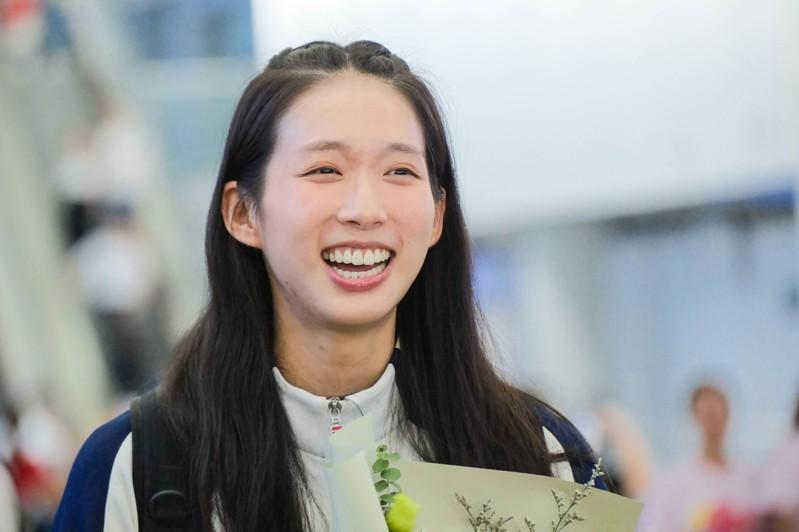

刚在巴黎奥运摘得女子重剑个人金牌的香港选手江旻憓，4日发文称将告别全职击剑运动员生涯，期待新的职业发展。
这位技术精湛、性格开朗、外表出众的运动员，在夺金后很快被祝福和掌声围绕。通过社交平台的海量碎片，人们在江旻憓身上发现了更多惊喜。美国史丹福大学、中国人民大学、香港中文大学的求学之路，以及烹饪、钢琴、绘画、瑜伽等丰富的爱好，让大家迫不及待给她粘贴「完美」的标签。
但很多人不知道的是，这位看起来无懈可击的运动员，决赛后在混合采访区几乎泣不成声。
「我只是想不要输得那么难看。」对于最后的逆袭，江旻憓表示自己尽量将注意力集中在进攻上，几乎忘记了分数。她从一堆记者面前走过，思路清晰但略微激动地回答每一个问题。直到尾声，她依旧说道：「在这么多采访之后，我还是不敢相信这（冠军）是我。」
毕竟在第三次奥运之旅，她才登上最高领奖台。击剑出现在她生命中的时间点，也没有像其他职业选手那样早。
江旻憓此前尝试过许多运动，包括田径、跆拳道和花样滑冰，直到父亲向她推荐了击剑。「击剑就像体育界的芭蕾，非常优雅，我真的很喜欢它。」江旻憓11岁才正式开始接受重剑训练。
好在成绩迅速给了她正向反馈。13岁成为全国少年锦标赛U17组冠军、2008年在亚洲青少年击剑锦标赛中夺金、20岁参加击剑世界杯拿下铜牌……这个天生左撇子、手长腿长的高个女孩，凭借坚持不懈的努力训练，在赛场不断释放潜能。
她曾为备战里约奥运休学一年，奥运首秀拿到第11名，之后在东京奥运上拿下个人赛第五名，为香港队创下历史。
但这一路伴随她的不只是荣誉和突破，伤病也如影随形，其中包括两次前十字韧带撕裂。直到这次比赛前，膝盖上的伤仍困扰着她。
「我训练的时候把膝盖的半月板弄坏了，也因为受伤退出亚锦赛，所以很焦虑。」江旻憓说，一直到奥运前两周，自己才调整好身体状态。
参加巴黎奥运一直是她的目标，如今这枚奥运金牌如愿成为她职业生涯闪闪发光的里程碑。
但她的梦想不只有击剑。在史丹福大学学习国际关系时，江旻憓就希望以后能去联合国工作，并在此前去瑞士时顺道参观了联合国设在当地的相关机构。
她此次发帖也写道：「我期待有新的职业发展，让我可以学习及成长……为设立自己的慈善基金做好准备，让小朋友重拾运动的乐趣。」
对于江旻憓在巅峰时结束全职运动员生涯，观者的反应有祝福，有惊讶，也有遗憾。在大家眼里，拿到奥运金牌的江旻憓是「完美」的，但勇于做出这个决定、探索更大世界的她，更加令人惊喜。
巴黎奥运热话题麟洋配赛后大合照 李洋「1句话」逗笑马来西亚选手与约克维奇打到抢7落败 阿尔卡拉斯：我有过机会30岁生日礼物 中国刘洋夺金 想吃三鲜馅饺子金牌内战成饭圈大战？孙颖莎满场欢呼 陈梦收获嘘声4日赛程 网球男单王者诞生、樊振东力拚桌球男单金牌

江旻憓日前自巴黎返抵香港。（中通社）
刚在巴黎奥运摘得女子重剑个人金牌的香港选手江旻憓，4日发文称将告别全职击剑运动员生涯，期待新的职业发展。
这位技术精湛、性格开朗、外表出众的运动员，在夺金后很快被祝福和掌声围绕。通过社交平台的海量碎片，人们在江旻憓身上发现了更多惊喜。美国史丹福大学、中国人民大学、香港中文大学的求学之路，以及烹饪、钢琴、绘画、瑜伽等丰富的爱好，让大家迫不及待给她粘贴「完美」的标签。
但很多人不知道的是，这位看起来无懈可击的运动员，决赛后在混合采访区几乎泣不成声。
「我只是想不要输得那么难看。」对于最后的逆袭，江旻憓表示自己尽量将注意力集中在进攻上，几乎忘记了分数。她从一堆记者面前走过，思路清晰但略微激动地回答每一个问题。直到尾声，她依旧说道：「在这么多采访之后，我还是不敢相信这（冠军）是我。」
毕竟在第三次奥运之旅，她才登上最高领奖台。击剑出现在她生命中的时间点，也没有像其他职业选手那样早。
江旻憓此前尝试过许多运动，包括田径、跆拳道和花样滑冰，直到父亲向她推荐了击剑。「击剑就像体育界的芭蕾，非常优雅，我真的很喜欢它。」江旻憓11岁才正式开始接受重剑训练。
好在成绩迅速给了她正向反馈。13岁成为全国少年锦标赛U17组冠军、2008年在亚洲青少年击剑锦标赛中夺金、20岁参加击剑世界杯拿下铜牌……这个天生左撇子、手长腿长的高个女孩，凭借坚持不懈的努力训练，在赛场不断释放潜能。
她曾为备战里约奥运休学一年，奥运首秀拿到第11名，之后在东京奥运上拿下个人赛第五名，为香港队创下历史。
但这一路伴随她的不只是荣誉和突破，伤病也如影随形，其中包括两次前十字韧带撕裂。直到这次比赛前，膝盖上的伤仍困扰着她。
「我训练的时候把膝盖的半月板弄坏了，也因为受伤退出亚锦赛，所以很焦虑。」江旻憓说，一直到奥运前两周，自己才调整好身体状态。
参加巴黎奥运一直是她的目标，如今这枚奥运金牌如愿成为她职业生涯闪闪发光的里程碑。
但她的梦想不只有击剑。在史丹福大学学习国际关系时，江旻憓就希望以后能去联合国工作，并在此前去瑞士时顺道参观了联合国设在当地的相关机构。
她此次发帖也写道：「我期待有新的职业发展，让我可以学习及成长……为设立自己的慈善基金做好准备，让小朋友重拾运动的乐趣。」
对于江旻憓在巅峰时结束全职运动员生涯，观者的反应有祝福，有惊讶，也有遗憾。在大家眼里，拿到奥运金牌的江旻憓是「完美」的，但勇于做出这个决定、探索更大世界的她，更加令人惊喜。
巴黎奥运热话题
- 麟洋配赛后大合照 李洋「1句话」逗笑马来西亚选手
- 与约克维奇打到抢7落败 阿尔卡拉斯：我有过机会
- 30岁生日礼物 中国刘洋夺金 想吃三鲜馅饺子
- 金牌内战成饭圈大战？孙颖莎满场欢呼 陈梦收获嘘声
- 4日赛程 网球男单王者诞生、樊振东力拚桌球男单金牌